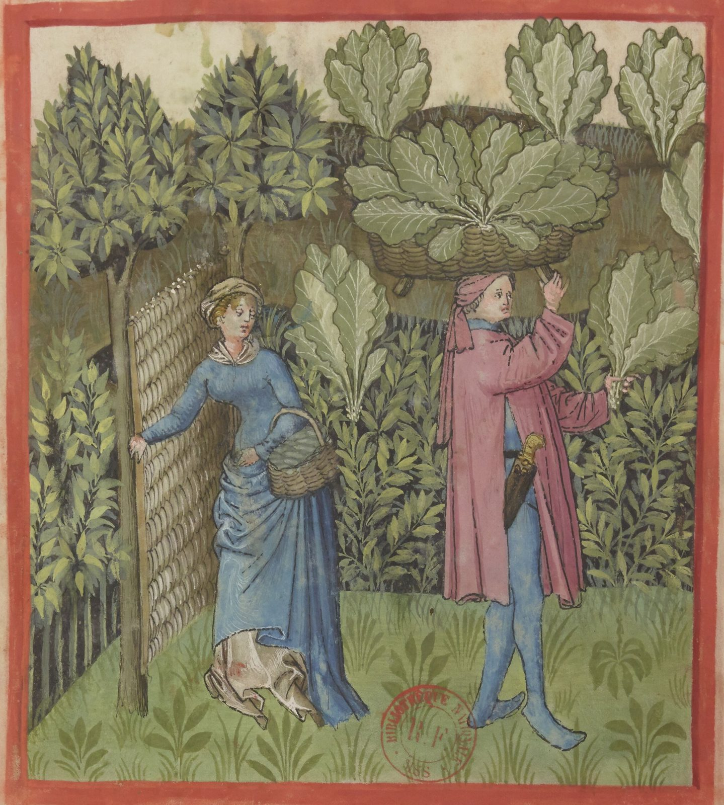

Harvesting cabbages, from Ibn Butlan's Tacuinum sanitatis — an eleventh-century Arabic handbook of health, here in a Latin copy painted around 1445–1450 (Bibliothèque nationale de France, Latin 9333, f. 53). The genre that gave this publication its name: a regimen was the whole of how you lived. Public domain, via Wikimedia Commons / Gallica . Health, nutrition and medicine — one question at a time, from the studies
All + 14 more calcium diet first principles hard water hydration kidney stones nutrition oxalate sodium supplements uric acid urology vitamin C vitamin D
View: 🗂 Cards 📋 List
No entries match that search.
👁 — visits to this page
Medical disclaimer. Everything on this site is general information for education only. It is not medical, nutritional or health advice , and it is not a substitute for advice from a licensed physician, pharmacist, dietitian or other qualified health professional who knows you. The author is not a licensed health professional and writes under a pen name; no entry has been reviewed by a doctor or anyone else with a medical licence. Reading this site, or writing to it, creates no doctor–patient or other professional relationship. Do not start, stop or change any medication, supplement, diet or treatment because of something read here — talk to your clinician first. If you think you may have a medical emergency, call your doctor or your local emergency number (911 in the United States) now. Read the full disclaimer →
The Librarian's Regimen · About · Disclaimer · All tags · Ask a question · RSS · The Librarian's Ledger · The Librarian Abroad · nothing here is medical advice© 2026 The Librarian's Regimen. Nothing on this site is medical, nutritional or health advice, and no reply from Mr. Librarian is either. This site is one reader's reading of published research — not a diagnosis, not a treatment, not a recommendation to start, stop or change anything — and it does not replace a conversation with a clinician who knows you. It has not been reviewed, edited or approved by any physician or other licensed health professional. Studies are summarised in good faith from public sources and may be misread, superseded or simply wrong; check the originals before relying on anything here. No drug, supplement, product, company or organization named on this site has endorsed it or is affiliated with it; nothing here is sponsored. Use of this site is at your own risk — see the full disclaimer .